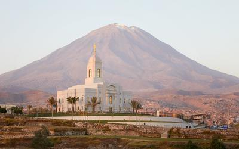
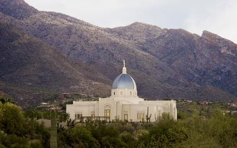

Arequipa Peru Temple
Aba Nigeria Temple
Anchorage Alaska Temple
Asunción Paraguay Temple
Billings Montana Temple
Preston England Temple
Vernal Utah Temple
Provo City Center Temple
Sao Paulo Brazil Temple
Snowflake Arizona Temple
Star Valley Wyoming Temple

Tucson Arizona Temple